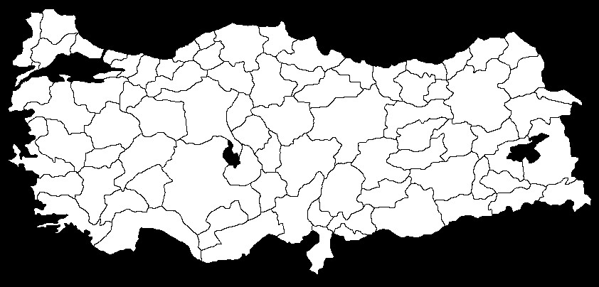

Açık seçim arşivi · 2018 — 2024
Türkiye'nin son 13 seçimini tek arşivde inceleyin.
81 il, 973 ilçe. YSK ve TÜİK kaynaklı.
Tarafsız dil · reklam yok · ücretsiz erişim
+ Anket firmaları modülü (beta)
13
seçim
81
il
973
ilçe
7
yıl demografi

secimarsivi.com
AlperTan™